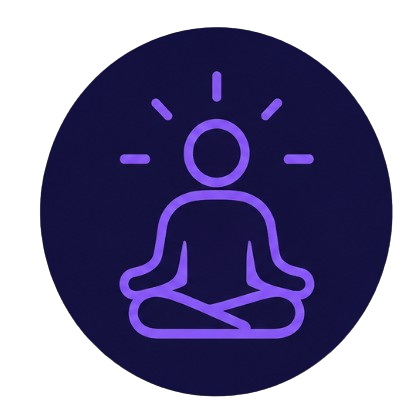
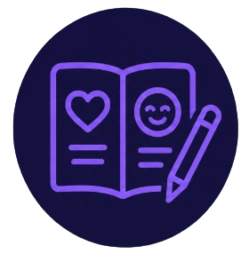
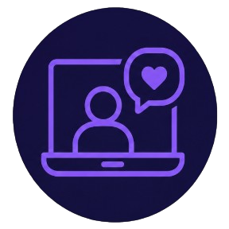
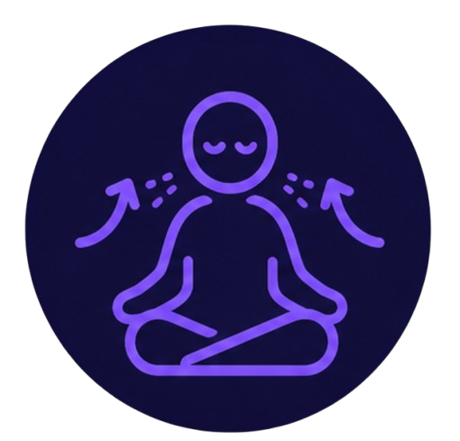

Bienestar mental
En la era digital, nuestra salud mental puede verse afectada por el consumo excesivo de contenido, la comparación constante y la sobrecarga informativa. Cuidar nuestra mente es tan importante como cuidar nuestro cuerpo. Aquí encontrarás herramientas prácticas para fortalecer tu bienestar emocional en el entorno digital.
Tip del día
Dedica 5 minutos al día a la respiración consciente. Siéntate en un lugar tranquilo, cierra los ojos y concéntrate en tu respiración. Inhala profundamente por la nariz, sostén 3 segundos y exhala lentamente por la boca. Esta práctica reduce el estrés, mejora la claridad mental y te ayuda a reconectar contigo mismo.

Mindfulness
Aplicaciones como Headspace o Calm ofrecen meditaciones guiadas, ejercicios de respiración y sonidos relajantes que te ayudan a reducir la ansiedad y mejorar tu atención plena.
Cómo aplicarlo en tu día a día: Dedica 5-10 minutos cada mañana a una meditación guiada. Puedes hacerlo al despertar o antes de dormir. Con la práctica constante, notarás mayor calma y claridad mental.

Diario emocional
Aplicaciones como Daylio o Journey te permiten registrar tu estado de ánimo, identificar patrones emocionales y reflexionar sobre tus experiencias diarias.
Cómo aplicarlo en tu día a día: Escribe 3 cosas que te hayan hecho sentir bien cada día. Con el tiempo, identificarás qué actividades mejoran tu estado de ánimo y cuáles lo empeoran, permitiéndote tomar decisiones más conscientes.

Terapia en línea
Plataformas como BetterHelp o Talkspace conectan a usuarios con terapeutas profesionales a través de videollamadas, chat o llamadas, haciendo la ayuda psicológica más accesible.
Cómo aplicarlo en tu día a día: Si sientes que necesitas apoyo profesional, agenda una sesión semanal con un terapeuta en línea. Es una forma flexible y privada de cuidar tu salud mental desde cualquier lugar.

Ejercicios de respiración
Técnicas simples como la respiración 4-7-8 o la respiración diafragmática ayudan a activar el sistema nervioso parasimpático, reduciendo el estrés y la ansiedad en minutos.
Cómo aplicarlo en tu día a día: Cuando sientas ansiedad o estrés, practica la respiración 4-7-8: inhala 4 segundos, sostén 7, exhala 8. Repite 4 veces. Hazlo en momentos de pausa (esperando el autobús, antes de una reunión, al acostarte).